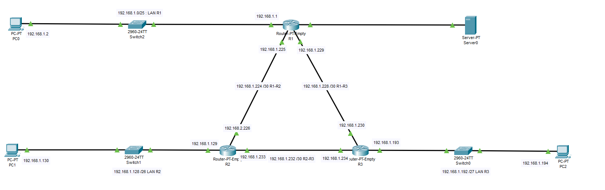
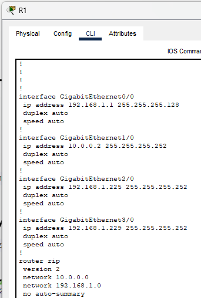
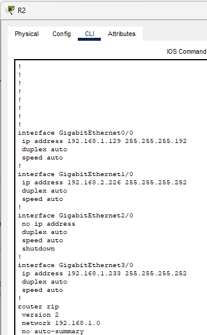
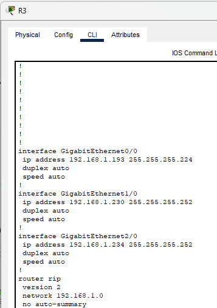
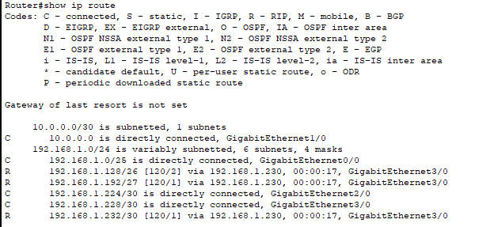
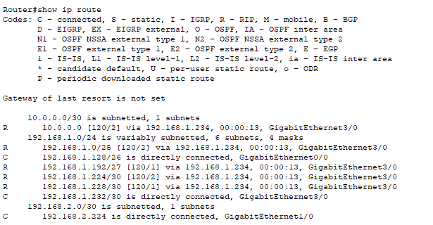
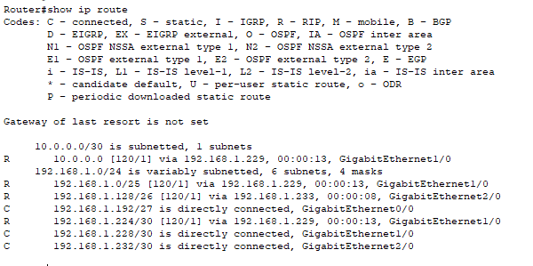
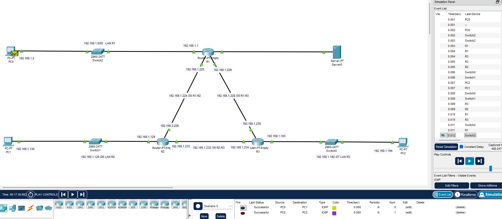

Ce TP a pour objectif de mettre en place un routage dynamique RIPv2 sur une topologie à trois routeurs (tripod). RIPv2 est utilisé ici pour son support des masques à longueur variable (VLSM), permettant d'optimiser l'adressage IPv4 à partir d'un seul bloc de 256 adresses.
La topologie comprend 3 routeurs (R1, R2, R3), 3 switchs d'accès et 3 postes clients. R1 est le routeur central connecté aux deux autres via des liaisons point-à-point /30.

| Réseau | Masque | Contrainte | Plage adressable | Diffusion |
|---|---|---|---|---|
| LAN R1 | 192.168.1.0/25 | 100 adresses | 192.168.1.1 → 192.168.1.126 | 192.168.1.127 |
| LAN R2 | 192.168.1.128/26 | 50 adresses | 192.168.1.129 → 192.168.1.190 | 192.168.1.191 |
| LAN R3 | 192.168.1.192/27 | 25 adresses | 192.168.1.193 → 192.168.1.222 | 192.168.1.223 |
| R1–R2 | 192.168.1.224/30 | 4 adresses | 192.168.1.225 → 192.168.1.226 | 192.168.1.227 |
| R1–R3 | 192.168.1.228/30 | 4 adresses | 192.168.1.229 → 192.168.1.230 | 192.168.1.231 |
| R2–R3 | 192.168.1.232/30 | 4 adresses | 192.168.1.233 → 192.168.1.234 | 192.168.1.235 |
La configuration RIPv2 a été appliquée sur chacun des trois routeurs. La commande no auto-summary est indispensable pour que RIPv2 respecte les masques VLSM et ne résume pas les routes de façon incorrecte.



La commande show ip route permet de vérifier que chaque routeur a bien appris les routes des autres réseaux via RIPv2 (routes marquées R).



Des pings entre les postes clients de LAN différents confirment que le routage RIPv2 fonctionne correctement sur toute la topologie.
